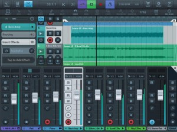
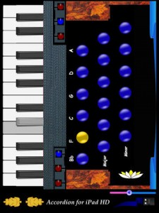
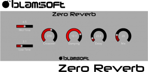
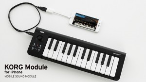
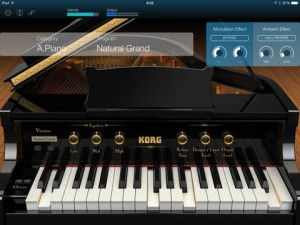
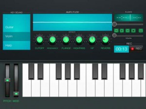
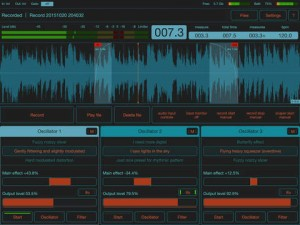

[appext 989112953]*** Please note that a supported hardware device is required to unlock the feature set of Cubasis LE (unless unlocked Cubasis LE runs in demo mode). Please visit http://www.steinberg.net/cubasisle for more details. (Or watch the video below) ***
Cubasis LE is the compact version of Steinberg’s streamlined, multitouch sequencer for the iPad, providing the same look and feel of its bigger brother Cubasis. Specially designed for quick and easy operation, Cubasis LE makes recording, editing and mixing a breeze. With MicroSonic, Cubasis LE includes a virtual instrument to be played in real time using the flexible virtual keyboard. Song ideas can be captured with up to four audio and four MIDI tracks and further edited and polished to perfection with the integrated editors, mixer and selected effects. Thanks to the Cubasis project importer, Cubasis LE projects can be even opened in Cubase – both on Windows and OS X. With touch-intuitive production tools, Cubasis LE opens up a new world of possibilities for your creativity.
Key features
• Up to 4 audio and 4 MIDI tracks
• 2 assignable physical inputs and stereo output
• 32-bit floating point audio engine
• Audio I/O resolution of 16-bit/44.1 kHz
• iOS 32 and 64-bit support (depending on the device used)
• MicroSonic with 25 virtual instrument sounds
• Mixer with 4 effect processors
• Virtual keyboard
• Sample Editor and Key Editor
• Export to Cubase
• Core Audio and Core MIDI compatible hardware supported
• Import audio from your iTunes music library
• Audio mixdown and MIDI export
• Unlock all the features of the full Cubasis version via in-app purchaseTechnical support
http://www.steinberg.net/cubasisleforumPolyphony:
48 voices: iPad 2, iPad mini
128 voices: iPad 3, iPad 4, iPad mini 2, iPad mini 3, iPad Air, iPad Air 2For more details, and comparisons with the full version, head to – http://www.steinberg.net/en/products/mobile_apps/cubasis_le/start.html
Cubasis LE….Finally!
Accordion for iPad
It’s news to me, but apparently this is one of the most popular music apps ever, well, accordioning (see what I just did thre?) to it’s developer anyway. So popular in fact that they have re-released it for the 2015 holiday season.
So if you’re musical arsenal is missing that certain special something, grab this app before it disappears from the App Store forever! 🙂
Here’s the details from the developer –
[appext 1052532829]For the Holidays only we are brining back Accordion for iPad HD, one of the most popular music apps ever!
Highest quality sounds period! 4 Full Octaves!
C1: 32.730HzC2: 65.406HzC3: 130.813HzC4: 261.626HzPrecise Volume control for keys! Fully automated volume control for buttons! That is more than any other accordion app in the App store!
We are no longer making music apps, however, in response to overwhelming requests we’ve updated it to support iOS7, iOS8 and iOS9, so that you can enjoy it again!
This is a limited time offer and it is only for 2015 Holidays, so get yours today!
Zero Reverb
[app 1051938245]Tired of the stock reverb in your DAW? Looking for a more modern sound? Zero Reverb is an Audio Unit Extension that works as a plug-in inside host apps. Just open up your favorite host that supports Audio Units and add it as an effect. The controls expand when touched so they can be easily seen while tweaking. Zero Reverb will soon become your go-to reverb plug-in on iOS.
Zero Reverb is a high quality Feedback Delay Network reverberator in the Audio Unit Extension format. The algorithm has rich feedback with smooth decay for a modern hall-like reverb character. Blamsoft brings their experience creating high quality plug-ins for the desktop to iOS. The same algorithm is found in the popular Zero Hybrid Synthesizer Rack Extension for Propellerhead Reason. The available parameters allow you to dial in a wide variety of reverb textures.
KORG Module for iPhone
[appext 1039144421]Top-quality piano and keyboard sounds in minimal size. A high-quality mobile sound module app for iPhone.
KORG Module is a high-quality mobile sound module app that’s ideal both for performance and for music production, and features a pro-level high-quality sound library. In addition to the iPad version, it’s now available for iPhone as well. Your iPhone, together with a MIDI keyboard such as the new microKEY, is all you need to easily perform unsurpassed grand piano and studio-quality keyboard sounds anywhere and anytime. Without making any compromise regarding sound quality, the newly compact KORG Module for iPhone redefines the standard of sound that can be played on a mobile device.
FEATURE HIGHLIGHTS
● Stunningly high-quality piano and a full range of keyboard sound engines
● Five dedicated sound engines containing powerful tone: Acoustic Piano, Electric Piano, Clav, Organ, and Multi
● Ultra-low latency sound engine
● With your iPhone and the new microKEY, you can enjoy great sound anywhere
● Two graphic modes: 3D for overflowing realism or 2D for superb operability
● Set List function is convenient for practicing, performing, or rehearsing*** Stunningly high-quality piano and a full range of keyboard sound engines ***
Due to KORG’s decades of technological experience gained by developing historic workstations and synthesizers, the “NATIVE ENGINE” brings a generous amount of high-quality sounds and smooth playback to mobile devices. We’ve carefully ensured ideal playability and designed the system for ultra-low latency. The core of this engine consists of five dedicated sound engines: Acoustic Piano, Electric Piano, Clav, Organ, and Multi. Similar to the iPad version, there are 100 programs built in. Beautiful graphics are designed for each module, showing carefully selected parameters that make it easy for anyone to edit the sound. In spite of the size of the iPhone, the sound quality is precisely the same as the iPad version. Don’t wait to experience the superb sounds that emanate from such a compact device.*** With your iPhone and the new microKEY, you can enjoy great sound anywhere ***
KORG Module and the microKEY are the best possible combination for a mobile performance environment. With the new microKEY which supports a damper, or the microKEY Air which provides a wireless connection via Bluetooth MIDI, your iPhone instantly transforms into a high-quality sound module. In your room, in a practice studio, when riding in a moving vehicle, or outdoors, it’s easy to set up and immerse yourself in a superb playing experience wherever you are. Of course you can also use any MIDI keyboard that can connect to your iPhone via Apple Lightning – USB camera adapter. Even without a MIDI keyboard, you can play using the app’s keyboard or phrase function.*** Two graphic modes: 3D for overflowing realism or 2D for superb operability ***
The beautiful 3D graphic screen provides an atmosphere that evokes a great playing experience. We’ve paid attention to details such as the three-dimensional appearance of each module and the reflected highlights of the keyboard. In contrast, the 2D screen features a simple design with excellent visibility and operability, allowing effortless editing even on the compact screen of your iPhone. The 2D screen also provides a “smart keyboard” that lets you specify the scale appropriately for the song and also allows you to play chords with just one finger. You can use the interface that’s best for your needs.
KORG Module Le for iPad
[app 1048875111]The best sounds, available to everyone. FREE lite version lets you experience the high-quality sound. Announcing a new high-quality mobile sound module app for iPad!
• KORG Module for iPad (Full version): Achieved the #1 position on the App Store* in the Top Paid Music App category
*USA, UK, Japan, Germany, France, Italy, Canada and much more!Ideal for performance and music production, KORG Module is a high-quality sound module app for iPad that contains a professional sound library. With just your iPad and a MIDI keyboard such as the new microKEY, you can play studio-quality keyboard and grand piano sounds anywhere.
To help users sample and understand the KORG Module, we’ve provided “KORG Module Le for iPad,” a free lite version for download. Although there are some limitations, it’s the easiest way to experience high-quality piano sound. The sounds and functions are expanded if you use “KORG Module Le” with KORG Controller products* like new microKEY, microKEY Air. Please refer to KORG Software Bundle page for the products list: http://www.korg.com/bundle
FEATURE HIGHLIGHTS
● With just an iPad and the new microKEY, you can enjoy great sound anywhere
● Stunningly high-quality piano and a full range of keyboard sound engines
● Ultra-low latency sound engine*** With just an iPad and the new microKEY, you can enjoy great sound anywhere ***
KORG Module and the microKEY are the best possible combination for a mobile performance environment. With the new microKEY which supports a damper, or the microKEY Air which provides a wireless connection via Bluetooth MIDI, your iPad can transform into a high-quality sound module. In your room, in a practice studio, or performing on stage,, it’s easy to set up and immerse yourself in a superb playing experience wherever you are. Of course you can also use any MIDI keyboard that can connect to your iPad via Apple Lightning – USB camera adapter. The velocity curve function conforms the sound to your playing dynamics, so you’ll be able to perform comfortably using any MIDI keyboard. Even if you don’t have a MIDI keyboard, you can use the apps on-screen keyboard, phrase function to play the sounds.*** Stunningly high-quality piano and a full range of keyboard sound engines ***
KORG Module has five dedicated sound engines, providing a number of high-quality sounds that can be played back on your iPad using the “NATIVE ENGINE”. These engines feature technology that was developed for KORG’s historic line of workstations and synthesizers including: Acoustic Piano, Electric Piano, Clav, Organ, and Multi. Each display has carefully selected parameters, making it convenient and easy to adjust the sounds. We’ve also carefully ensured ideal playability and designed the system for ultra-low latency. Once you experience the quality of the sounds being produced from the slim body of your iPad, you’ll agree that KORG Module is radically different than anything else currently on the market.
Synth Station PRO
[app 1051678978]New level of music creation with your own digital Synth Station PRO! Professionally made keyboard emulation, popular presets and sound effects – everything in one music maker application on Mac. Choose samples, spin records and adjust the settings composing your own electronic melody!
How to use: Choose one of presets and loops for lead or bass part. Start composing your electronic track using hot keys (with the help of keyboard tutorial). Set up special effects, record and save.
Synth Station PRO features:
– Professional virtual synthesizer studio
– Variety of presets and loops
– Easy record of your tracks
– Unique sound effects and filters
– Smart visualizationCreative music instrument in your hand – Synth Station PRO!
FieldScaper
Advanced field recorder combined with a sound warp engine and a collection of ready to use dynamic presets for iPad and iPhone. Discover new ways to create and construct unusual and exciting sounds from any environmental audio recordings or samples recorded from other apps through Inter-App audio or Audiobus.
The main purpose of this advanced app is to shorten the way from recording samples to create spectacular soundscapes and in addition to use this app as glitch loop based effect in the real-time.
The FieldScaper consists of two main parts. The first part is the field recorder with special options for different ways of record environmental sound from microphone or record other sound sources. The second part is the scaper sound engine that with using dynamic presets can easily transform the most ordinary samples into something absolutely different. These parts connect with each other into one whole but you can use recorder or scaper separately.
The scaper sound engine contains three sample-based oscillators each with filters, delay, distortion and spatial mixer. The most of parameters can be assigned on individual low-frequency oscillators. With using the “Main effect” fader you can control several these parameters in different ranges. These features give you the abilty to create continuously changing, breaking and glitching sound forms and loop-based effects from ordinary samples of synths, guitars, voices or everyday sounds of the environment.
FieldScaper supports complete MIDI control for all faders, knobs and many buttons. You can change the parameters of oscillators, filters, delays and mixer by using any external MIDI controller or MIDI apps like sequencers. With the MIDI controllers this app becomes very comfortable to use at live performance.
Field recorder:
● Loop based mode for recording and processing in real-time.
● Auto start record when input signal appears.
● Auto stop record when silence or by time.
● Record timer in seconds or measures.
● Monitoring input signal with different modes.
● Automatic gain control of input signal.
● Predefined filters for input.
● Noise gate on the input.Scaper sound engine:
● Three sample-based oscillators with complete processing.
● Low-pass, high-pass and band-pass filters with resonance.
● Two range delay with smooth time change and additional modes.
● Spatial mixer/reverb with side and distance.
● Wide range of oscillator clock speed change with reverse.
● Distortion effect based on masking sample address (like circuit bending).
● Distortion effect consisting of lofi, overload, noise and ring modulation.
● Individual LFO for variable parameters of oscillators and filters.
● The “Main effect” function for control several parameters simultaneously.
● Presets for save all parameters of oscillator and filters.Additional features:
● Predefined presets with wide range of effects.
● Convenient file manager with groups of files by name or date.
● Complete MIDI control for all faders, knobs and other modes.
● Possibility to download additional samples in different audio formats.
● Uploading samples thru Web access, clipboard, from another app and iTunes.
● Different color schemes available for the user interface.
● Detailed application description.
● Supports Audiobus with “State Saving” feature.
● Inter-App audio compatible.For more info – http://motion-soundscape.blogspot.com.au/
[appext 1006624104]
Ferrite Recording Studio
Ferrite combines the ease-of-use of a “voice memo” audio recorder, with a versatile multi-track editing studio — and powerful additional tools like effects & automation available when you need them.
With time-saving features and a UI designed to get out of your way, this is the app you need for podcasting, radio journalism, or other professional voice production like lectures, speeches, and voiceovers.
— Streamlined Recording —
Open Ferrite and with just one tap you’re recording. No fuss, and it won’t break a sweat even with hours-long sessions. Just make sure your device has enough free space!
Recording an interview and you want to highlight a few quotes? Have to take out some inappropriate language? Or just fluffed a sentence and need to fix it? Bookmark moments during your recording and they’ll be flagged up during edits, so you can jump right to them.
Monitor levels with live recording meters, or listen through headphones. Tag your audio to find it quickly later. And of course you can import audio from your Music Library, iCloud, and other services such as Dropbox.
Please note: the free version has limited duration for recording & editing projects. Upgrade, and you can edit projects up to 24 hours long!
— Editing is a Snip —
Ferrite features full multi-track editing, from quick cuts, up to producing a complete podcast or broadcast package. Zoom out to see hours at a glance, or zoom in all the way down to individual samples.
Take a single clip, or a bunch, and arrange them in an editing project: moving, cropping, slicing, fading in and out, or crossfade between clips just by overlapping them. Arrange your clips on tracks, with full control over each track’s volume and panning, and Mute or Solo as needed.
And best of all, you needn’t fear trying out changes: Ferrite has great Undo/Redo — even if you quit the app and come back a month later, you can still undo all the way back to the moment you created your project!
— Advanced Editing Features —
Need more? Ferrite also includes:
• Automatic ducking: set tracks to “duck under” others (e.g. ducking music behind voice-overs)
• Strip Silence: Carves away all the silent sections from a recording, making it easy to edit the remaining audioWith a single In-App Purchase, you can unlock these additional tools:
• Add professional effects to your tracks such as Noise Gate and Dynamic Range Compression, for projects that sound clean and engaging
• Automate volume, panning and effects settings so they vary over time, both on individual tracks and the final mix
• Adjust automated settings during playback to record your changes into the timeline
• If you need the most precise control, you can create or fine-tune automation curves directly— Bonus Features in iOS 9 —
• Find your recordings and projects direct from your Home Screen, with Spotlight support
• iPad Split View and Slide Over support: Use Ferrite side-by-side with other apps. Recording a narration? Open another app with your script and place Ferrite down the side of the screen. Or open the User Guide in Safari on one side while you learn Ferrite on the other.Bonus features available on compatible devices only. Please see our support pages for more details. Maximum number of tracks available depends on the speed of your device.
Fore more details – http://www.wooji-juice.com/products/ferrite/index

[appext 1018780185]


{kind=link}
{kind=link}
{kind=link}
{kind=link}
{kind=link}
{kind=link}
{kind=link}